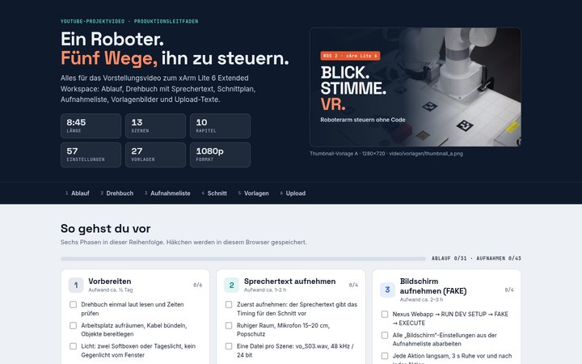

Unterlagen
Alles zum Vorstellen, Bedienen und Entwickeln: ein Klick zum Dokument
01Vorstellen
Für Besucher, Poster-Session und Präsentation: das Projekt in wenigen Minuten verstanden
 Interakt Control Robot
Interakt Control RobotZehn Steuerwege, eine Sicherheitskette: Eingabegeräte, Kette zum Ausprobieren mit E-STOP, Fähigkeits-Matrix
HTML Projektvorstellung
ProjektvorstellungInteraktiv: 3D-Digital-Twin mit Pick & Place, Greif-Ablauf in 7 Schritten, Datenfluss durch die ROS-2-Pakete, Shared Control, KI-Agent, Palettieren, Evaluierung
HTML Poster A2
Poster A2Das Projekt auf einer Seite, für Poster-Session und Druck
HTML
ProjektvideoDrehbuch mit Animatic, Aufnahmeplan und Schnitt
HTMLPoster als PDF: poster_a2.pdf
02Bedienen & Einrichten
Für Bediener im Labor und remote: vom Einschalten bis zur ersten sicheren Bewegung
 Handbuch xArm Lite 6
Handbuch xArm Lite 6System Map, Regelkreis, Sicherheit, Ports, Remote Guide, VLA-M auf einen Blick (Skills, Einstiegswege, Sicherheit) inkl. Bewegungsprofil, Logistik-Zelle mit Band-Nachrücken, Rollenauslauf & Pusher
HTML Setup-Karte
Setup-KarteNetze, Adressen, Ports, HTTPS/VR, Server/Client
Nexus Schnellstart
SchnellstartSystem starten, FAKE (Simulation) oder REAL (Roboter) wählen
MD Setup-Guide
Setup-GuideInbetriebnahme Schritt für Schritt: PC vorinstalliert oder ab nacktem Ubuntu
HTML03Technik-Doku
Für Entwickler: Architektur, Schnittstellen, Pakete · docs/de
Projekt verstehen
Zielsetzung, Merkmale, Aufbau und Abläufe auf einen Blick
04Konzept & Zielsetzung
Für Forschung und Lehre: Problemstellung, Lösungsansatz und Leitfrage des Projekts
Konventionelle Teleoperation von Industrierobotern setzt Feinmotorik und Expertenwissen voraus und schließt damit viele potenzielle Nutzergruppen aus. Das Projekt untersucht, wie multimodale Eingaben, assistive Autonomie und ein Digital Twin diese Barrieren senken, ohne die Kontrolle des Menschen einzuschränken.
- Abstraktion: aufgabenbezogene Befehle statt Gelenkkoordination
- Inklusion: Teilhabe unabhängig von physischen oder kognitiven Voraussetzungen
- Synergie: Roboter als Assistenzwerkzeug, das entlastet statt ersetzt
- High-Level: Ziele per Blick, Sprache oder KI-Chat vorgeben
- Low-Level: Feinkorrektur per Gamepad über MoveIt Servo
- Assistenz: kollisionsfreie Bahnplanung sichert jede Ausführung ab
- Demonstrator: voll funktionsfähig am xArm Lite 6
- Testumgebung: assistive Systeme unter realitätsnahen Bedingungen entwickeln und erproben
- Offen: eigene Pakete unter Apache 2.0, nachbaubar für andere Labore
- Messgrößen: Usability, kognitive Beanspruchung, Systemleistung
- Instrumente: SUS, NASA-TLX, UEQ-S, SEQ im Monitoring Dashboard
- Transfer: Gestaltungsempfehlungen für die Einführung in Unternehmen
Wie lassen sich Prozesse und Arbeitsplätze so gestalten, dass sie die menschzentrierten Anforderungen der Industrie 5.0 messbar erfüllen?
Systemidee: Entwicklungs-, Evaluierungs- und Validierungsplattform
Als Integrationsschicht auf Middleware-Ebene (ROS 2) führt die Plattform heterogene Teilsysteme in einer Laufzeitumgebung zusammen. Verteilter Server/Client-Aufbau und Digital Twin (WebGL, optional NVIDIA Isaac Sim) schließen den Kreislauf aus Entwicklung und empirischer Validierung.
ZED-Tiefenkamera mit YOLO-Objekterkennung und ArUco-Marker-Tracking; taktile und physiologische Sensoren (geplant).
Blick (Tobii), Sprache (OpenAI Whisper), Gamepad, VR und Touch nebeneinander; der Control-Lock aktiviert jeweils einen.
Ein LLM-Agent (Ollama oder Claude) übersetzt sprachliche und visuelle Befehle in Handlungssequenzen: Greifen, Platzieren, Palettieren.
Zeitsynchrone Aufzeichnung von Leistungsdaten (rosbag2-Blackbox) und Interaktionsdaten (UI-Klicks, Fragebögen).
Ausführlich: Konzept & Architektur
05Kernmerkmale
Acht Merkmale, ein Prinzip: Das System schlägt vor, der Mensch entscheidet.
Per Chat, Sprache, Blick, Gamepad, VR oder Touch.
Der Agent zerlegt den Auftrag in Greifen, Tragen, Ablegen.
Physik, virtuelle Objekte und Kollisionsprüfung zeigen das Ergebnis vorher.
Jede Bewegung live überwacht, E-STOP jederzeit erreichbar.
Live-3D-Zwilling im Browser; die Physik-Sandbox simuliert Schwerkraft, Kontakt und Greifen vor der echten Fahrt.
Würfel, Flasche, Bälle, Schale, Korb: greifen, verschieben, stapeln; kollisionsgeprüft in MoveIt, ohne Kamera.
Roboterzustand, Umgebung (ZED, OctoMap) und Bewegungsausführung live; Monitoring Dashboard und Blackbox zeichnen mit.
ISA-101IEC 60073Der Agent macht aus Sprache Bewegungsabläufe; Entscheidung und Feedback des Menschen steuern jeden Schritt.
ISO 9241-110Bedienung komplett im Browser: am Roboter-PC, aus dem Heimnetz oder in der Quest 3 per WebXR.
WCAG 2.2Control-Lock, Kollisionsvorprüfung, MoveIt und E-STOP gelten für alle zehn Steuerwege gleich.
ISO 10218ISO 13850Eigene Pakete unter Apache 2.0, aufgebaut auf ROS 2 Humble und MoveIt 2.
Bessere Eingabegeräte, Kameras, KI-Modelle oder Software-Module ersetzen die alten einzeln; feste ROS-2-Schnittstellen halten den Rest des Systems unverändert. Als Nächstes wird auch der Roboterarm austauschbar (geplant).
Normbezüge: Gestaltung und Sicherheitskonzept orientieren sich an den auf den Karten genannten Normen; keine Zertifizierung.
06System-Stack
Vom Bediener bis zur Hardware: sieben klar getrennte Schichten, jede Komponente austauschbar
Hardware · Referenz-Aufbau
Referenz-Aufbau im Labor. Jedes Gerät lässt sich hinter seiner ROS-2-Schnittstelle tauschen, z. B. gegen eine andere Kamera, ein anderes Gamepad oder Sprachmodell.
Roboterarm, 6 Achsen
Pick and Place, Laser-Zielhilfe
Stereo-Tiefe, 3D-Punktwolke
i9-12900K · RTX A5000
Kartesisches Joggen, Tempo
6-DoF-VR-Teleoperation
Blicksteuerung, Greifen per Verweilzeit
Sprachbefehle, zusätzliches Touch Panel
07Funktionsabläufe
Wie eine Bewegung entsteht: sechs Kernabläufe Schritt für Schritt, mit jeder Sicherheitsprüfung auf dem Weg. Schritt anklicken, Ablauf abspielen oder Störfall auslösen.